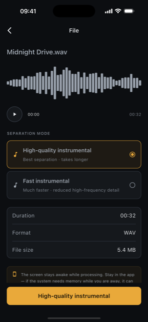
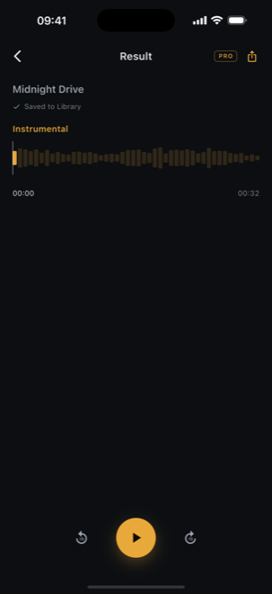

一览
大多数人最想先知道的四件事。每一项细节及其来源，都在下面的完整对比表中。
| App | 不上传 | 无需账号 | 可离线使用 | 付费方式 |
|---|---|---|---|---|
| VocalOut | ✓是 | ✓是 | ✓是 | 一次性 $6.99 |
| StemLab | ✓是 | –未说明 | –未说明 | 订阅或终身版 |
| Stem Splitter – Vocal Remover | ✓是 | –未说明 | ✓是 | 订阅 |
| Vocal Remover AI : Split Music | ✓是 | –未说明 | ✓是 | 订阅或终身版 |
| Vocal Remover · Stem Splitter | ✓是 | ✓是 | ✓是 | 订阅 |
| Stemify | ✓是 | ✓是 | ✓是 | 免费，含广告 |
| Moises | ✗否 | ✗否 | –未说明 | 订阅 |
| LALAL.AI | ✗否 | ✗否 | 仅桌面端 Pro | 订阅或分钟包 |
✓ 是 · ✗ 否 · – 厂商未说明
完整对比表
同样的八款 App，附上每个答案背后的细节。前六款在手机上分离，后两款是云端服务。价格为美国 App Store 或厂商官网价格；厂商没有说明的地方，表格中写未说明。
左右滑动表格可查看所有列 →
各人声消除 App 的厂商官方说明，核查于 2026 年 11 月 1 日。上标数字链接到来源。
| App | 是否把音频上传到服务器？ | 是否需要账号？ | 价格模式 | 平台 | 导出费用 / 限制 | 能否离线使用？ | 可把歌曲分离为 |
|---|---|---|---|---|---|---|---|
| 在设备上分离 | |||||||
| VocalOutGrayForge（本站） | 否。模型内置在 App 中，在手机上运行。12 | 否。1 | 免费下载；处理不限次数且免费。Pro：一次性 $6.99，没有订阅。12 | iPhone、安卓1 | 在 App 内试听免费。导出到“文件”或其他 App（32 位）需要 Pro。12 | 能。1 | 2 种模式：纯伴奏，或单独的人声1 |
| StemLabLauper Labs | 否。商店页面称不上传任何内容。3 | 未说明3 | 免费下载。Pro：每周 $1.99、每月 $3.99、每年 $14.99，或终身 $59.99。3 | iPhone、iPad、Mac（iOS、iPadOS、macOS 26.2 或更高版本）3 | 不限次数分离和单独导出分轨需要 Pro。支持 WAV、FLAC 或 M4A。3 | 未说明；分离在设备上运行。3 | 4 或 6 个分轨3 |
| Stem Splitter – Vocal RemoverBulpara Teknoloji | 否。商店页面称音频从不会到达服务器。4 | 未说明4 | 有免费层级。Premium 订阅：每月 $4.99 或每年 $29.99。4 | iPhone 12 或更新机型（iOS 17.4+）、iPad、Apple 芯片 Mac4 | 免费版：每月 3 次分离，可导出 MP3。页面也列出了 WAV，但未说明属于哪个层级。4 | 能；商店页面的副标题写明离线。4 | 4 个分轨4 |
| Vocal Remover AI : Split MusicInverse.AI | 否。商店页面称没有上传，也没有服务器。5 | 未说明5 | 免费下载。Premium：每周 $4.99、每月 $9.99、每年 $29.99，或终身 $49.99。5 | iPhone、iPad（iOS 16.4+）、Apple 芯片 Mac5 | 可保存音频、视频、混音或单独音轨。未说明哪些免费、哪些属于 Premium。5 | 能。5 | 人声和伴奏5 |
| Vocal Remover · Stem SplitterOleh Lohinov | 否。使用设备端 Demucs 模型。6 | 否。6 | 免费下载。App 内购买：Pro Weekly $3.99 和 Pro Yearly $34.99。6 | iPhone、iPad（iOS 17+）、Apple 芯片 Mac6 | WAV 分轨或自定义混音。第一首歌完整免费；更多歌曲需要 Pro。6 | 能；商店页面称无需联网。6 | 4 个分轨6 |
| StemifyIB Labs | 否。商店页面称你的音乐留在设备上。7 | 否。7 | 免费，靠广告支持。未列出付费层级。7 | 安卓7 | 任意分轨均可免费导出为 WAV 文件。7 | 能，安装后即可。7 | 4 个分轨7 |
| 在云端分离 | |||||||
| MoisesMoises Systems | 是。歌曲会上传到存储在云端的资料库。81011 | 是；帮助页面从登录开始讲起。11 | 免费层级每月上传次数有限。Premium 每月 $5.99 或每年 $39.99；Pro 每月 $29.99。89 | iPhone、iPad、Mac、Apple TV、安卓、网页、Windows8910 | MP3 或 M4A；桌面端支持 WAV。免费层级的导出限制未说明。810 | 未说明89 | 免费版：人声、鼓、贝斯8 |
| LALAL.AIlalal.ai | 手机端是：分离在 LALAL.AI 的云服务器上进行。1213 | 是。1213 | 免费 Starter（10 分钟）。Lite 每年 $90，Pro 每年 $180。一次性分钟包 $50 起。14 | iPhone、iPad、安卓、网页、Windows、macOS、Linux121315 | 免费版仅可预览；下载完整结果需要付费方案。1214 | iPhone 和安卓上不能。桌面 App 的本地模式（Pro）可离线使用。121315 | 最多 10 种分轨类型（云端）1215 |
商店页面经常变动。App 隐私标签和“数据安全”部分由开发者自行填写；Apple 也说明其标签未经验证。
我们如何核查
VocalOut 是 GrayForge 开发的，阅读本页时请把这一点考虑在内。关于其他 App 的每一条信息，都来自它们自己的 App Store 或 Google Play 页面，或厂商官网，于 2026 年 11 月 1 日查阅；没有任何内容来自评测网站或我们自己的猜测。我们没有比较音质——音质很大程度上取决于歌曲本身——所以本页不按音质给这些 App 排名。这里的每款 App 都可以免费下载，你可以用自己的音乐听听差别。
VocalOut 免费版与 Pro
分离歌曲并在 App 内试听结果不限次数且免费，无需账号。VocalOut Pro 是一次性 $6.99 的购买，没有订阅，解锁把结果以引擎输出的完整 32 位品质导出到“文件”或其他 App。12



表格没有体现的内容
- VocalOut 只做一件事：去掉人声的纯伴奏，或单独的人声。它处理的是保存在手机上的歌曲文件，没有接入任何音乐平台。12分步教程介绍了完整流程。
- StemLab 的商店页面称无需订阅，却在 $59.99 终身版之外提供按周、按月和按年的方案，所以付款前请看清购买界面。3
- Stem Splitter – Vocal Remover 的免费层级包含全部四个分轨，而不只是人声。4
- Vocal Remover AI : Split Music 除了音频还能保存视频，其隐私标签称开发者不收集任何数据。5
- Vocal Remover · Stem Splitter 使用开源的 Demucs 模型。它的描述称没有订阅，而其 App 内购买项目却是按周和按年的 Pro 方案。6
- Stemify 称处理大约需要 2 到 8 分钟，建议使用 4 GB 或以上内存的手机。它的“数据安全”部分称可能会与第三方共享位置数据。7
- Moises 是一整套练习和制作工具，而不只是人声消除工具；它的价格页面称永远不会用你的数据训练模型。89
同样值得一看：iPad 版 Logic Pro 内含 Stem Splitter，可分离鼓、贝斯、人声、吉他、钢琴和其他乐器；它需要搭载 A17 Pro 或更新芯片的 iPad，通过 Apple Creator Studio 销售，价格为每月 $12.99 或每年 $129。1617djay 可以在打碟时实时分离人声、鼓和伴奏，但它是为现场表演而设计的，而不是用来保存伴奏的。18
自己验证“离线”说法
商店页面是卖 App 的人写的，我们的也不例外。花两分钟，你就能了解更多：
- 打开飞行模式并关闭 Wi-Fi，然后分离一首短歌。如果能完成，说明处理是在你的手机上进行的。
- 处理前出现登录界面，意味着你的歌曲与账号相关联。阅读隐私政策，了解歌曲会被如何处理。
- 阅读隐私部分（App Store 的“App 隐私”、Google Play 的“数据安全”），同时记住两者都是由开发者自行填写的。
无论使用哪款 App，你都要确保自己对所处理的音乐拥有相应权利。
常见问题
哪些人声消除 App 可以离线使用？
iPhone 上的 VocalOut、Stem Splitter – Vocal Remover、Vocal Remover AI : Split Music 和 Vocal Remover · Stem Splitter，以及安卓上的 VocalOut 和 Stemify，都表示无需联网即可在设备上分离歌曲。StemLab 称分离在设备上运行，但没有使用“离线”一词。Moises 和 LALAL.AI 的手机 App 在云端处理歌曲。
Moises 和 LALAL.AI 会上传我的歌曲吗？
会。LALAL.AI 的 iOS 和安卓页面称所有分离都在其云服务器上进行，并且需要账号；Moises 则描述了把歌曲上传到你在云端的 Moises 资料库。LALAL.AI 的桌面 App 为 Pro 订阅用户提供本地模式。
VocalOut 免费吗？
分离歌曲和在 App 内试听不限次数且免费，无需账号。把结果导出到“文件”或其他 App 需要 VocalOut Pro，这是一次性 $6.99 的购买，没有订阅。
VocalOut 能分离鼓、贝斯和其他乐器吗？
VocalOut 有两种模式：去掉人声的纯伴奏，或单独的人声。如果需要单独的鼓、贝斯或其他分轨，StemLab、Stem Splitter – Vocal Remover、Vocal Remover · Stem Splitter、Stemify、Moises 和 LALAL.AI 可以把歌曲分成四个或更多部分。
来源
所有页面均于 2026 年 11 月 1 日查阅。价格为当天这些页面显示的美国价格。
- VocalOut product page (GrayForge) · https://grayforge.app/vocalout/设备端模型、无需账号、处理不限次数且免费、Pro 一次性 $6.99 解锁 32 位导出、支持 iPhone 和安卓、离线、两种分离模式。核查于 2026-11-01。
- GrayForge llms.txt, VocalOut section · https://grayforge.app/llms.txt没有上传环节、无需账号、可离线使用、歌曲来自设备上的文件、Pro 为一次性 $6.99 购买且没有订阅。核查于 2026-11-01。
- StemLab: Stem Splitter, Vocals, App Store (US) · https://apps.apple.com/us/app/id6762580115设备端分离、App 内购买项目及价格、导出格式、4 分轨和 6 分轨模型、兼容性。核查于 2026-11-01。
- Stem Splitter - Vocal Remover, App Store (US) · https://apps.apple.com/us/app/id6767773635设备端处理、订阅价格、免费层级（每月 3 次分离，MP3 导出）、4 个分轨、iPhone 12 或更新机型。核查于 2026-11-01。
- Vocal Remover AI : Split Music, App Store (US) · https://apps.apple.com/us/app/id6759238439离线处理且不上传、App 内购买项目及价格、保存选项、兼容性、App 隐私标签。核查于 2026-11-01。
- Vocal Remover · Stem Splitter, App Store (US) · https://apps.apple.com/us/app/id6760567949设备端 Demucs 模型、无需账号、无需联网、Pro 价格、WAV 导出、4 个分轨。核查于 2026-11-01。
- Stemify - AI Stem Separator, Google Play (US) · https://play.google.com/store/apps/details?id=com.stemify.app设备端且可离线、无需账号、免费含广告、WAV 导出、4 个分轨、处理时间、“数据安全”部分。核查于 2026-11-01。
- Moises: The Musician's App, App Store (US) · https://apps.apple.com/us/app/id1515796612上传文件、App 内购买价格、免费版分轨、导出格式、兼容性。核查于 2026-11-01。
- Moises pricing page · https://moises.ai/pricing/免费层级每月上传次数有限，提供网页、桌面、iPhone、iPad 和安卓 App，不用用户数据训练模型。核查于 2026-11-01。
- Moises desktop app page · https://moises.ai/products/moises-desktop-app/Windows 和 Mac App、资料库存储在云端、可下载 MP3、M4A 和 WAV。核查于 2026-11-01。
- Moises help center, “Welcome to Moises” (Mobile App) · https://help.moises.ai/hc/en-us/articles/8472666994076登录、把音轨上传到你的 Moises 资料库、账号设置。核查于 2026-11-01。
- LALAL.AI for iOS · https://www.lalal.ai/ios-app/云端处理、需要联网和账号、免费版仅可预览、支持 iPhone 和 iPad、10 种分轨类型。核查于 2026-11-01。
- LALAL.AI for Android · https://www.lalal.ai/android-app/云端处理、需要联网和账号、支持安卓手机和平板。核查于 2026-11-01。
- LALAL.AI pricing · https://www.lalal.ai/pricing/Starter、Lite 和 Pro 方案，一次性分钟包，方案在网页、桌面、iOS 和安卓间通用。核查于 2026-11-01。
- LALAL.AI desktop app · https://www.lalal.ai/desktop-app/支持 Windows、macOS 和 Linux；默认使用云端；为 Pro 订阅用户提供离线本地模式。核查于 2026-11-01。
- Logic Pro for iPad (Apple) · https://www.apple.com/logic-pro-for-ipad/Stem Splitter 可分离的部分、Apple Creator Studio 的价格和试用。核查于 2026-11-01。
- Logic Pro: Make Music, App Store (US) · https://apps.apple.com/us/app/id1615087040仅限 iPad 和 Mac；Stem Splitter 需要 A17 Pro 或更新的芯片。核查于 2026-11-01。
- djay - DJ App & AI Mixer, App Store (US) · https://apps.apple.com/us/app/id450527929实时分离人声、鼓和伴奏，不支持 Apple Music 或 Spotify 中的歌曲。核查于 2026-11-01。
VocalOut — Vocal Remover
一款离线人声消除 App，能把手机里的任意歌曲变成干净的纯伴奏。AI 在你的设备上运行——无需上传，无需账号，处理不限次数且免费。
告诉我们，我们会更正表格。
商店页面会变化。如果上面的某个价格、平台或限制已经过时（包括关于 VocalOut 的内容），请附上链接发邮件告诉我们，我们会更正表格。
grayforge.dev@gmail.com